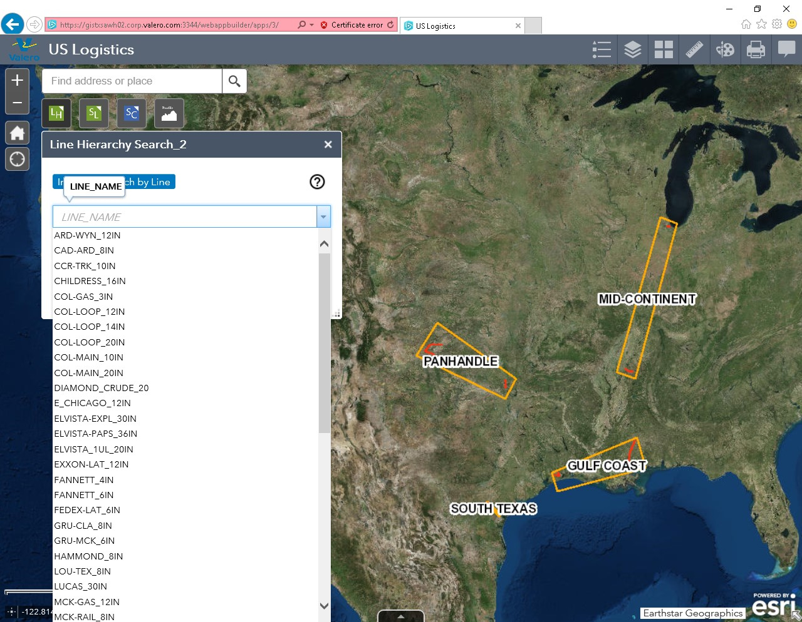
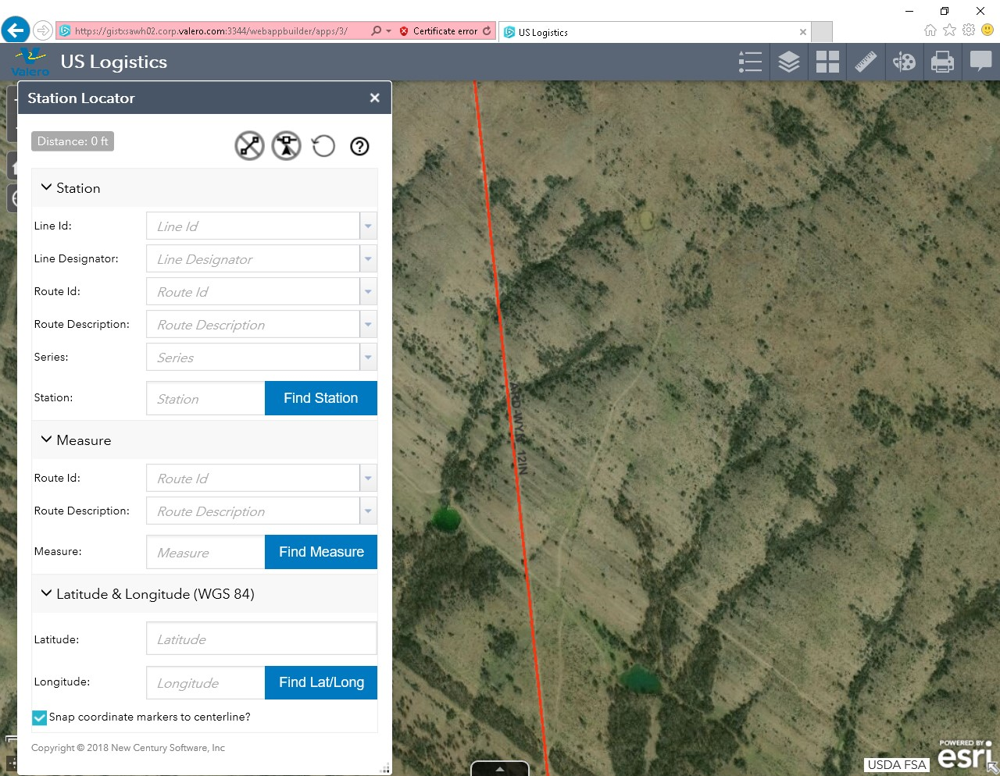
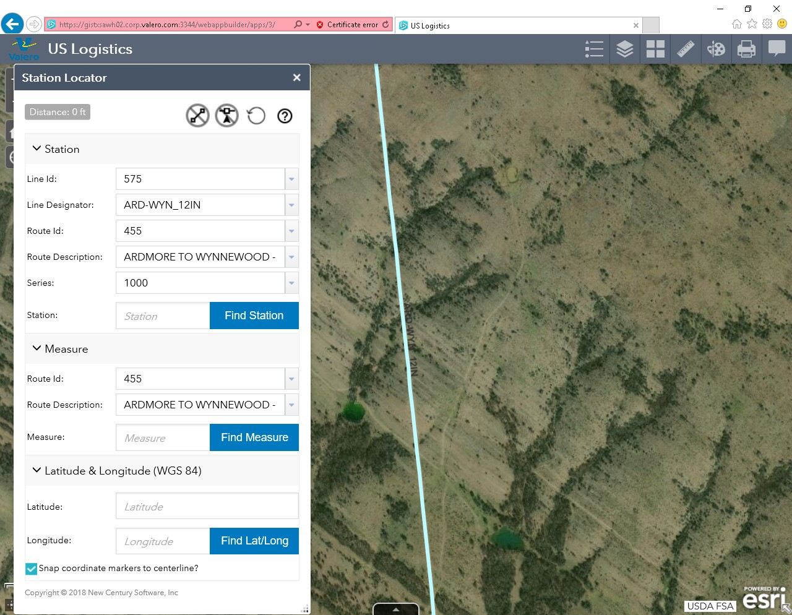
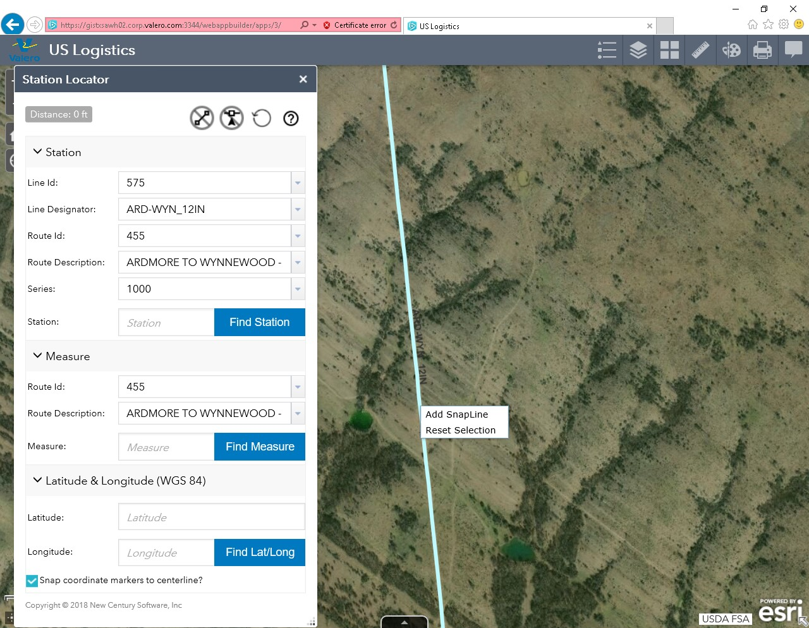
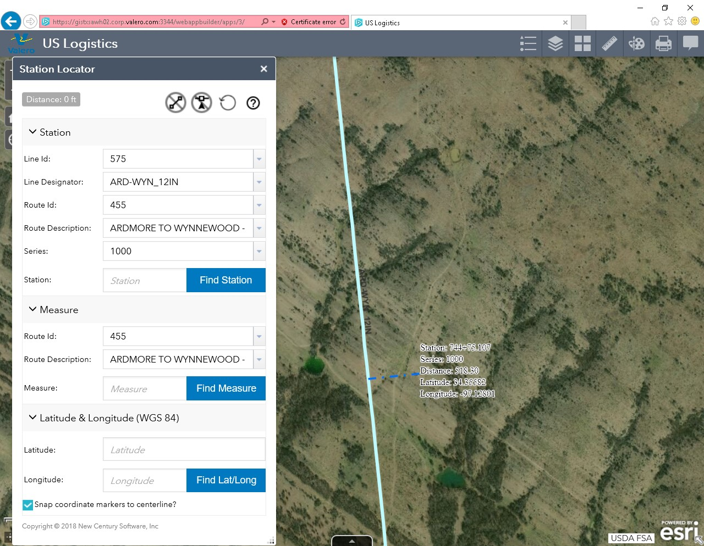
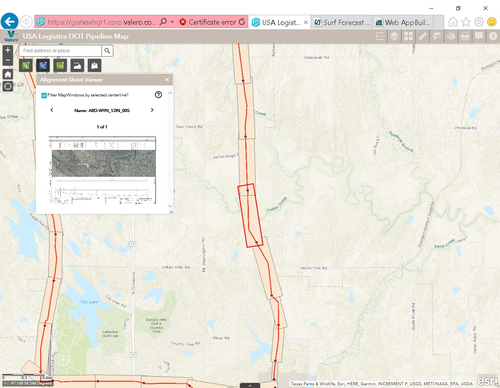
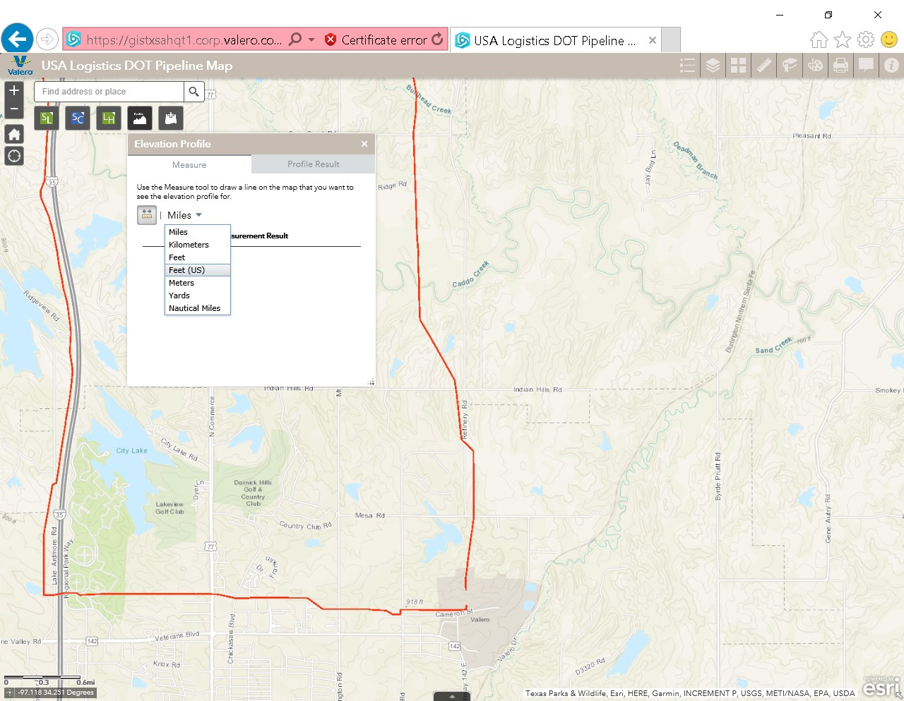
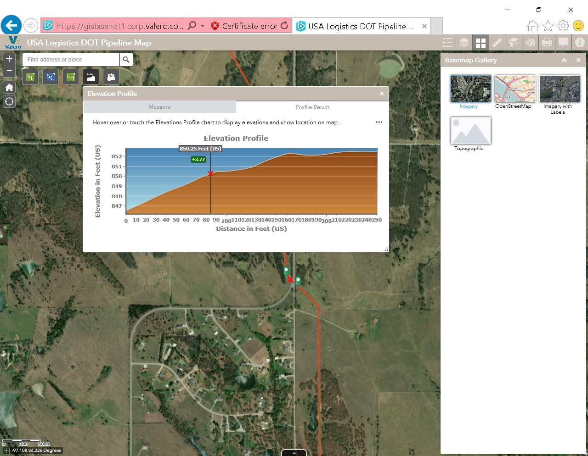
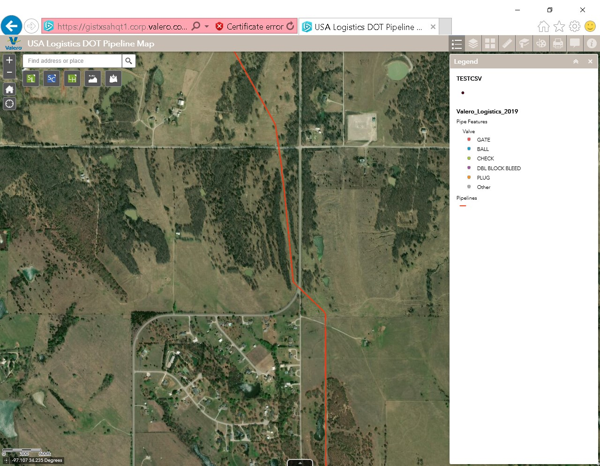

1. Widget - Line Search
Search by line name or Line Description. Once selected use the zoom to button or clear your search
2. Widget - Station Locator
User your mouse to select a line. The selected pipeline information will populate in the Station Locator Popup. You can find a desired Station/measure or Latitude/Longitude. Or you can add a snap line to find the stationing based on the locating in the map.
To find the stationing based on the locating in the map. Add a snap line by right mouse clicking on the line.
 The stationing will change as you move the mouse along the line. The “distance” label is how far you are from the pipeline.
3. Widget - Alignment Sheet Viewer
Select a window that represents the sheet you would like to look at. Select the thumbnail to view the sheet or user the arrows to go to the next / previous sheet.
4. Widget - Profile Generator
Select the units of measurement. Select a point on the map for your first point and then a second point. Double click to end the profile line.
The Profile window can be stretched as needed by dragging from the bottom right corner. As you move along the profile with the mouse the “X” in the main map will move to reflect the location.
5. Tool - Legend
The legend show the symbols for the layers that are currently active.
6. Tool - Layers
6.1 Integrity Layers
Pipelines
DOT Regulated Lines (non refinery)
Area Boundaries
Valero defined areas
Cathodic protection
Anode, Bond Lead, Cathodic Protection Range, Ground Bed, Junction Box, Rectifier, Test Lead.
Culture
Land Use
Geographic Features (Crossings)
Foreign Line Crossing, Railroad, Road, Sheet Note, Waterway
Operations
MOP, Owner Operator, Product, Status
Pipe Features
Branch Connect, Casing, Elbow, Exposure, External Coating, Flange, Horizontal Directional Drill, Internal Coating, Launcher Receiver, Marker, Marker (AGM), Pig Signal, Pipe Segment, reducer, River Weight, Sleeve, Structure Support, Tap, Tee, Vent Pipe, Valve
Valero Facilities
Valero Facilities, 3rd Party Facilities
Widget Layers (Application layer)
6.2 Regulatory Layers
HCA Liquid Lines
Operator Defined Area
DOT Class
Structure (Only for Gas Lines)
PHMSA Layers
Commercially Navigable waterways, Drinking Water, Ecological Sensitive Area, Highly Populated and Other Populated Areas)